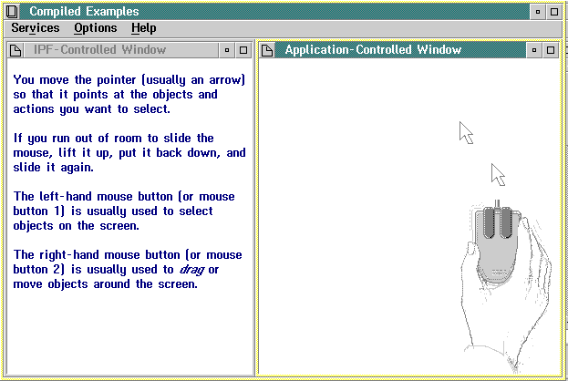

IPF handles the formatting and display of text and graphic information within its windows. IPF-controlled windows are defined in the tagged source file with a heading tag or :link.. These windows are IPF-controlled because IPF provides the window procedures that control them. The content and presentation of information in an IPF-controlled window is limited by the functions of a standard OS/2 window.
To create IPF-controlled windows, an author requires only tagging skills; however, to create application-controlled windows, an author requires both tagging and programming skills.
Application-controlled windows are defined in the tagged source file with the application-controlled window tag (:acviewport.). With this tag, a window is controlled by a communication object (see Customizing IPF with Communication Objects) that has been written and compiled into the form of a dynamic link library (DLL). When an IPF window is displayed at execution time and :acviewport. is encountered, IPF passes control to the entry point in the DLL specified by the objectname=' ' attribute of :acviewport.. This entry point is, in fact, a communication object.
At this point, the communication object takes control and executes the instructions specified in the source file. When the call returns to IPF, IPF sizes and positions the window on the screen as defined in the heading tag or :link. (see Customizing Windows).
The :acviewport tag can share a panel with text and, for that matter, you can have more than one :acviewport tag in the same panel.
In addition, an acviewport communication object can be called from more than one panel. The objectid= attribute enables the communication object to determine which help panel called it.
The following figure shows the tagging to produce a split window. In this example, the contents of the left window are IPF-controlled. The contents of the right window are defined and controlled by the IPF communication object IPFMain which resides in IPF.DLL.
:userdoc.
:title.Information Presentation Facility
:docprof ctrlarea=none.
:h1 res=016 scroll=none clear.Using a Mouse
.*
:link reftype=hd res=017 auto split
vpx=left vpy=top vpcx=50% vpcy=100%
rules=border scroll=none titlebar=none.
.*
:acviewport dll='ipf'
objectname='IPFMain' objectid=1
vpx=right vpy=top vpcx=50% vpcy=100%.
.*
:h2 res=017.Using a Mouse
.*
:p.You move the pointer (usually an arrow) so that it
points at the objects and actions you want to select.
:p.If you run out of room to slide the mouse, lift it up, put it
back down, and slide it again.
:p.The left-hand mouse button (or mouse button 1) is
usually used to select objects on the screen.
:p.The right-hand mouse button (or mouse button 2) is
usually used to :hp1.drag:ehp1. or move
objects around the screen.
:euserdoc.
The following figure shows the compiled version of the tagging shown in the previous figure.

The left window is IPF-controlled. The right window displays an animated mouse whose activity is controlled by a routine in a DLL.
In the previous example, IPF processes :acviewport. as follows:
IPFMain, IPF.DLL, and the bit maps used for the animated mouse are provided in the IPF sample program available with the Toolkit.